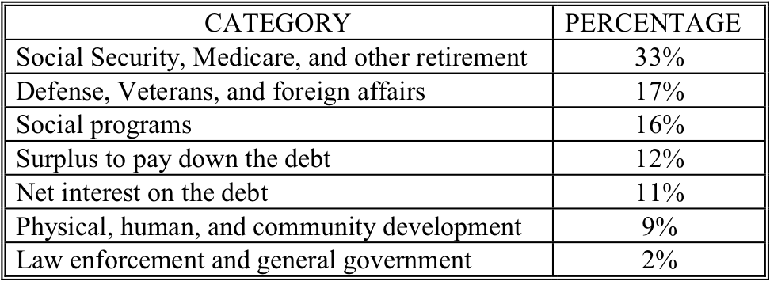
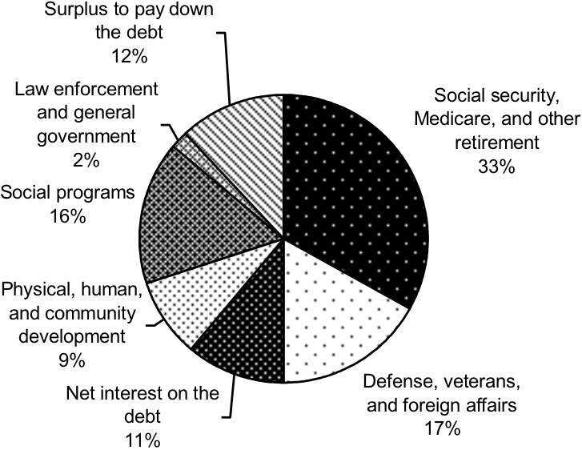

Computer graphics is the study of how to create images using a computer. This area of computer science is not only interesting for its own sake, but has many practical applications as well. We are all familiar with the stunning special effects from movies such as “Star Wars: Attack of the Clones” and “Matrix II”, as well as television shows such as “Star Trek: Enterprise” and “Farscape”. Many of the special effects for these movies and TV shows are created with the help of computer graphics. The visual aspects of other movies, such as “Final Fantasy”, were completely generated using computer graphics.
In addition to special effects, computer graphics are also central to another exciting field: the development of “virtual reality” or VR. VR is the collection of hardware and software that allows a person to interact with a computer generated world by providing real time visual, auditory, and tactile feedback based on his or her actions. In other words, by having the user wear some special equipment, such as a helmet and glove, the computer can determine where that person is looking and what they are touching. It uses this information to provide the appropriate images, sounds, and tactile feedback to make the experience realistic. Proposed uses for VR range from the mundane (e.g., attending electronic classes and business meetings) to the whimsical (e.g., becoming a knight and slaying a dragon). Of course, to maintain an acceptable level of realism, the computer must be able to quickly generate high quality graphical images of whatever the person is looking at.
A more common, but somewhat less exciting, application of computer graphics is the GUI, Graphical User Interface, (often pronounced “gooey”). GUIs implement an interface “metaphor”, such as a desktop, which allows people to interact with computer systems. Software objects, such as programs and data files, are generally represented as

A Graphical User Interface
postage-stamp-sized pictures called icons. A human can access one of these objects by selecting it with a pointing device, such as a mouse. When “opened”, an icon expands to become a window. A window is a portion of the computer screen used to communicate with a particular program. Windows and icons, generally, can be resized, made larger or smaller, and repositioned anywhere on the “desktop”. A picture of a graphical user interface is presented in .
GUIs are the most common type of interface between humans and computers. They probably also represent the most widely used application of computer graphics technology. Most software products, such as spreadsheets, word processors, and databases are GUI-based. All popular computer operating systems, including all Microsoft operating systems since Windows ’95 and all Apple operating systems since the original Macintosh OS, are fully GUI-based.
Computer graphics is a very broad area with many different kinds of applications. Not only are there many different uses for computer graphics, there are also many different approaches for creating graphical images on a computer. These approaches developed in response to different types of problems. Three approaches are briefly discussed below:
- Data visualization,
- Drawing packages, and
- Model-based graphics.
Data visualization is the process of creating a graphical image from a collection of data points. This approach is typified by most spreadsheet programs, which include the ability to automatically create pie charts, bar charts, and graphs from tables of data. As an example, contains a table listing the United States federal government outlays for fiscal year 2000 as relative percentages. The data is presented in the form of a pie chart in . This visual representation of the data was automatically generated by the word processor used to write this text, Microsoft Word.
United States federal outlays for fiscal year 2000 (tabular form)
United States federal outlays for fiscal year 2000 (pie chart)
Clearly, graphical images of this type are very useful since they allow a person to quickly get a “feel” for the data, without having to carefully analyze an entire table of numbers. The ability to produce images from a collection of data becomes critical when the amount of data is very large. Many scientific disciplines depend heavily on data visualization. For example, models of atmospheric conditions such as temperature and humidity, which are used to help predict the weather, can easily contain millions of data points. Without the ability to visualize this data, say by color coding it and plotting it by location, it would be almost impossible to spot trends or draw overall conclusions.
A second approach for generating graphical images involves using the computer as an electronic canvas. A person draws an image on a computer screen using some input device, such as a mouse or electronic pen. Computer programs that implement this approach to computer graphics are known as “drawing packages”. Electronic canvases, implemented by drawing packages, are in some ways superior to real drawing canvases, since they generally provide assistance in creating the drawing. For example, drawing packages usually provide a collection of predefined shapes such as straight lines and circles that can be drawn in any size, at any location on the canvas, using one of a large number of colors.
Drawing packages are put to a diverse range of uses, from architectural drafting to graphic arts and fine arts. This diversity is reflected in the wide variety of drawing packages that are available; ranging from very basic to quite elaborate. Basic drawing packages are usually sufficient for creating simple line drawings for reports or memos, and are often included in document creation software. More elaborate drawing packages can be used to create professional quality graphic art. Many packages include the ability to scan in a photograph, or conventionally produced piece of artwork, and touch up the image using the electronic equivalent of airbrushing.
A third approach to computer graphics involves the use of computer programs to produce images based on an internal model of the objects to be rendered. The model holds the characteristics of the objects, such as their size, shape, color, and location. Software automatically generates an image of the objects based on the details stored in the model. This approach is the most flexible since the objects may be viewed under different conditions. Many graphics programs allow the user to view objects from almost any angle or distance and under different lighting conditions. The model of an object can also be modified by the graphics program; for example, the color or size of an object may be changed. When most computer scientists speak of computer graphics, they are generally referring to this model-based approach.
Model-based computer graphics underlie most PC and console game engines. When you play a game like “Halo”, for example, your view of its world must be rendered from moment to moment, and the effect of your actions computed in order to support smooth game play.
Another major use of the model-based approach to computer graphics is CAD. CAD stands for Computer Aided Design. The basic idea is to “construct” and “test” an object, such as an aircraft engine, inside a computer before actually building anything. CAD allows an engineer to quickly and inexpensively test out preliminary designs by constructing a prototype that only exists as a model inside a computer. This model would contain all of the graphical information mentioned above, but in addition, it would also contain information about the physical characteristics of the object being modeled, such as its tensile strength, melting point, etc.